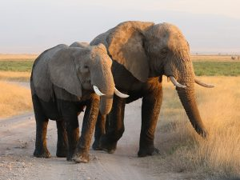
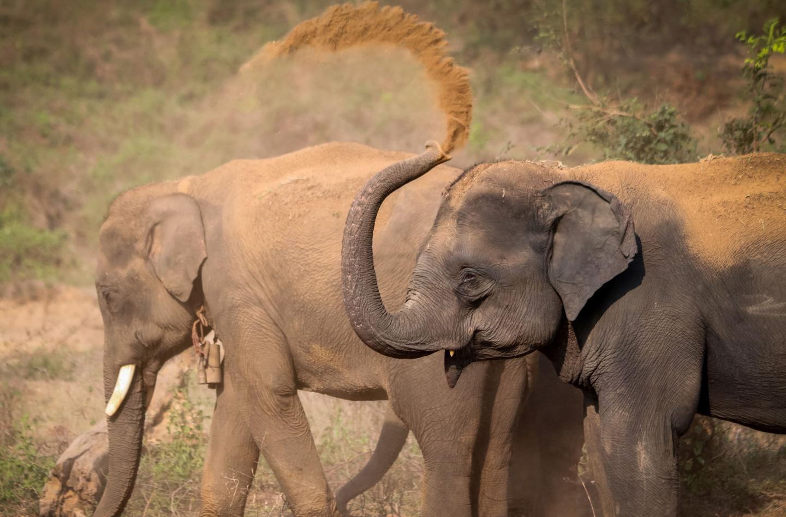
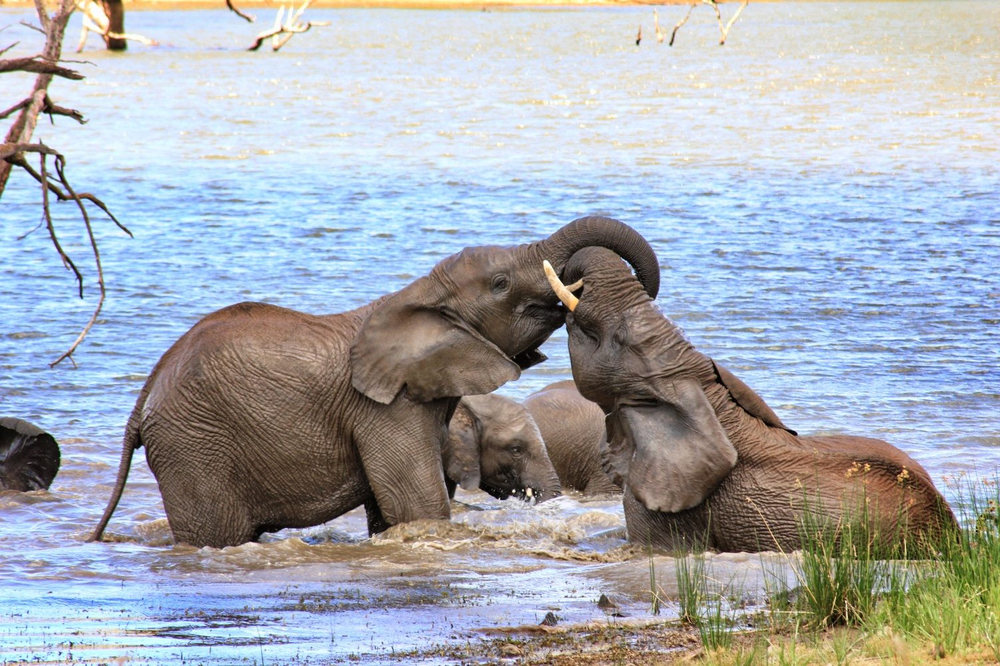
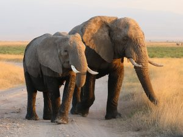
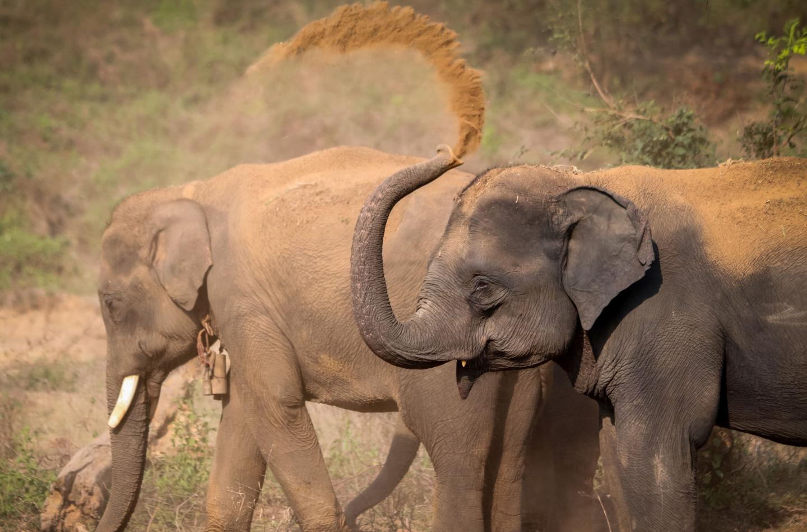
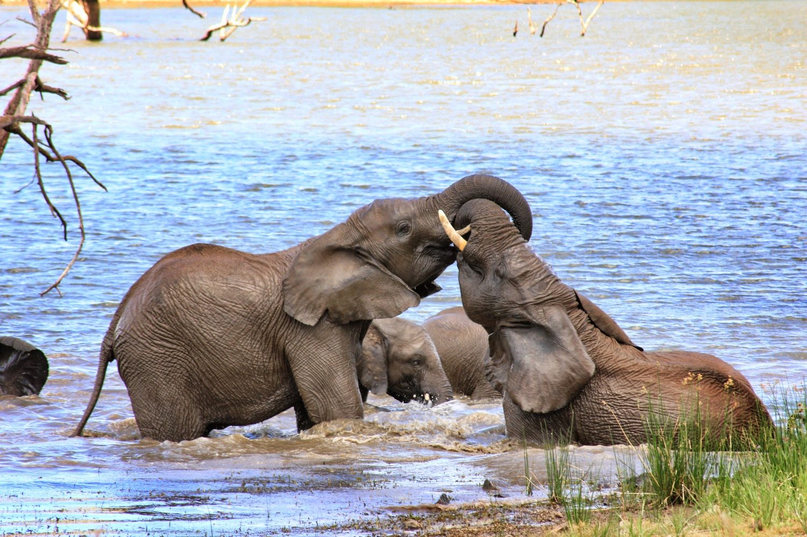

Friendly and Playful!
Our Gentle Giants...
THE ELEPHANTS!
Elephants are the largest land mammals on earth and have big bodies, large ears, and long trunks. They use their trunks to pick up objects, make noises, or suck up water for drinking or bathing. There are two types elephants : The African elephant (image 2) and the Asian elephant (image 3).
Two genetically different African species exist: the savanna elephant and the forest elephant, with a number of characteristics that differentiate them both. The African savanna elephant is the largest elephant species, while the Asian forest elephant and the African forest elephant are of a comparable, smaller size. Only some male Asian elephants have tusks, while both male and female African elephants grow tusks.These extended teeth can be used to protect the elephant's trunk, lift and move objects, gather food, strip bark from trees, and for defense. Elephants migrate, or travel, in search of food, they only eat plants and grasses. They often rest during the hottest hours of the day. They lie down to sleep for only a few hours at night.
Humans, mostly in Asia, use elephants for transportation and as work animals. Human activities have endangered the survival of wild elephants. Humans have destroyed many elephant habitats. Humans also have killed many elephants for the ivory of their tusks.
However, human activities have endangered the survival of wild elephants. Humans have destroyed many elephant habitats. Humans also have killed many elephants for the ivory of their tusks. Humans carve this ivory into works of art, jewelry, and other objects. Through years of research, scientists have found that elephants are capable of complex thought and deep feeling. They are self aware and can develop close bonds. Studies show they grieve and mourn their dead, proving that they're truly empathetic, social animals. They have the largest brain of any land animal and have really good memory.
 




